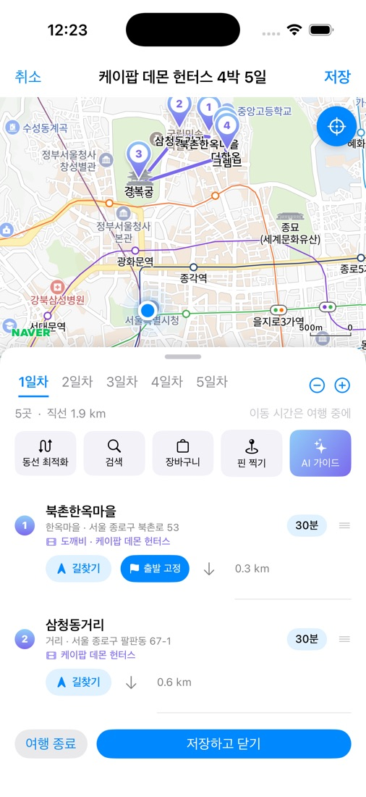
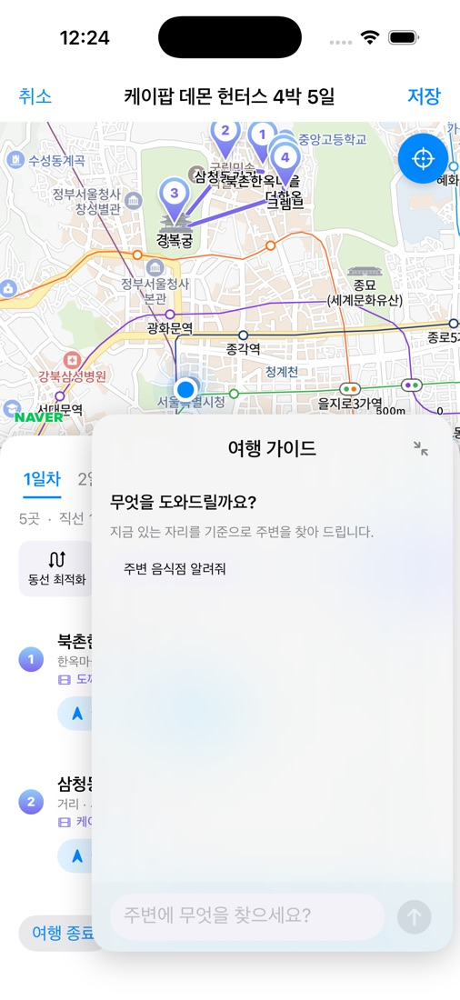
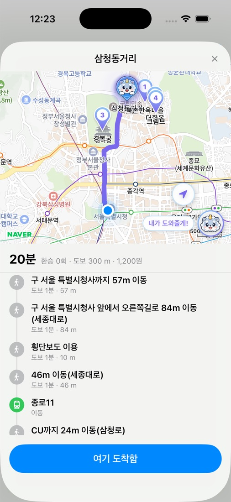

드라마 속 그 장소로,
진짜 여행을 떠나세요.
SceneTrip(씬트립)은 한국을 찾는 외국인 여행자가 2000년대 이후 한국 드라마·영화·K-pop·예능 콘텐츠의 실제 촬영지(성지)를 지도에서 찾고, AI로 여행 코스를 짜고, 도보·대중교통 길안내를 받으며 여행할 수 있게 돕는 모바일 앱입니다.
From the screen
to the real place.
SceneTrip is a mobile app for international visitors to Korea. Find the real filming locations of Korean dramas, films, K-pop and variety shows from the 2000s onward on a map, plan a route with AI, and get walking and public-transit directions while you travel.
주요 기능What you can do
작품 검색부터 현장 도착, 기록까지 한 앱에서 이어집니다.From searching a title to arriving on location and keeping a record — all in one app.
작품 검색 → 지도에서 촬영지 보기Search a title, see locations on the map
작품·배우·장소 이름으로 검색하면 해당 작품의 촬영지가 지도 위에 표시됩니다.Search by title, actor or place and the filming locations appear as pins on the map.
AI 여행 코스 짜기AI trip planning
가고 싶은 작품과 일정을 고르면 AI가 날짜별 동선(코스)을 제안하고, 직접 순서를 바꾸거나 장소를 더할 수 있습니다.Pick the shows you love and your dates; AI proposes a day-by-day course you can reorder and edit.
여행 중 길안내In-trip navigation
다음 촬영지까지 도보와 대중교통(버스·지하철) 경로를 단계별로 안내합니다.Step-by-step walking and public-transit (bus, subway) directions to the next location.
여행 가이드 챗봇Travel-guide chatbot
"주변 음식점 알려줘"처럼 물으면 지금 있는 촬영지를 기준으로 주변 식당·관광지·숙소를 찾아 줍니다.Ask "restaurants nearby?" and the guide finds places to eat, see and stay around your current location.
방문 스탬프Visit stamps
촬영지 가까이(100 m 안)에 도착하면 스탬프가 찍혀 나만의 성지순례 기록이 남습니다.Arrive within 100 m of a location to collect a stamp and build your own pilgrimage log.
커뮤니티·코스 공유Community & shared courses
다른 여행자가 만든 코스를 가져오고, 후기를 나눌 수 있습니다.Import courses made by other travelers and share your reviews.
앱 화면Screenshots
개발 중인 iOS 앱의 실제 화면입니다.Actual screens from the iOS app in development.



앱 UI는 현재 한국어로 개발 중이며 영어·일본어·중국어 화면을 준비하고 있습니다. 화면 속 지도는 네이버 지도입니다.The app UI is being built in Korean first; English, Japanese and Chinese are in preparation. Maps shown are Naver Maps.
한국관광공사 TourAPI 활용How we use KTO TourAPI
촬영지 하나만 보고 끝나지 않도록, 그 주변에서 무엇을 보고·먹고·머물지를 TourAPI 공공데이터로 채웁니다.A filming location is the start, not the end — TourAPI data tells travelers what to see, eat and where to stay around it.
촬영지 주변 관광 정보What's around each location사용 중In use
- 관광지·문화시설·축제·레포츠·쇼핑 — 촬영지 주변 가볼 곳으로 지도와 코스 편집 화면에 표시
- 음식점·숙박 — 주변 식당·숙소 추천과 챗봇 "주변 음식점/숙소" 답변에 사용
- AI 코스 짜기에서 촬영지 사이에 끼워 넣을 관광지 후보로 사용
- 현재 국문 목록 약 3만 3천 건(관광)과 음식·숙박 일부를 적재해 사용
- Attractions, cultural facilities, festivals, leisure, shopping — shown on the map and in the course editor as places to visit nearby
- Restaurants and lodging — nearby recommendations and chatbot answers
- Candidate stops the AI planner can add between filming locations
- About 33,000 attraction records (Korean list) plus some food/lodging records are loaded today
외국인을 위한 다국어 정보Multilingual info for visitors운영계정으로 확대Expanding with production access
- 영문·일문·중문 공식 장소명과 주소 — 외국인이 현지에서 간판·표지판과 대조하고 택시·길찾기에 쓸 수 있도록 표시
- 관광지 개요·이용 안내(운영시간, 휴무일, 이용요금 등)를 외국어로 제공
- 촬영지·코스·챗봇 답변이 여행자의 언어로 보이도록 다국어 서비스 연동
- 운영 트래픽을 감당할 수 있도록 정기 동기화 방식으로 서버에 적재
- Official English, Japanese and Chinese place names and addresses — to match local signs and use with taxis and directions
- Overviews and visitor info (hours, closing days, fees) in the traveler's language
- Locations, courses and chatbot answers shown in the traveler's language via the multilingual services
- Synced to our server on a schedule to serve production traffic
| 앱 화면 | Screen | TourAPI 데이터 | TourAPI data | 여행자에게 보이는 것 | What the traveler sees |
|---|---|---|---|---|---|
| 지도(작품 검색) | Map | 관광지·문화시설 좌표·분류 | Attraction / cultural facility coordinates & category | 촬영지 주변 볼거리 핀 | Pins for things to see nearby |
| 코스 편집·AI 코스 | Course editor & AI planner | 관광지·음식점·숙박 목록 | Attractions, restaurants, lodging | 동선에 넣을 장소 후보 | Places to add to the route |
| 여행 가이드 챗봇 | Travel-guide chatbot | 반경 내 장소명·주소·분류 | Names, addresses, categories within a radius | "주변 음식점" 등 질문의 답 | Answers to "what's nearby?" |
| 장소 정보 | Place info | 외국어 장소명·주소·개요 | Foreign-language names, addresses, overviews | 여행자 언어로 된 장소 안내 | Place info in the traveler's language |
만든 팀Team
팀 mz2az · 과학기술정보통신부 AI·SW마에스트로 제17기 프로젝트Team mz2az · AI·SW Maestro, 17th cohort (Ministry of Science and ICT, Korea)